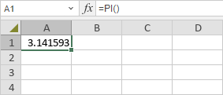

PI funkcija
PI funkcija je jedna od matematičkih i trigonometrijskih funkcija. Funkcija vraća matematičku konstantu pi, jednaku 3.14159265358979. Ne zahteva nikakav argument.
Sintaksa
PI()
Napomene
Kako primeniti PI funkciju.
Primeri
Slika ispod prikazuje rezultat koji vraća PI funkcija.
